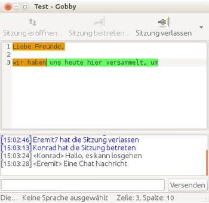
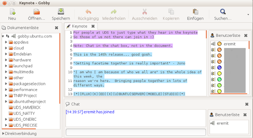

Gobby
Dieser Artikel wurde für die folgenden Ubuntu-Versionen getestet:
Ubuntu 14.04 Trusty Tahr
Zum Verständnis dieses Artikels sind folgende Seiten hilfreich:
Gobby ist ein Text-Editor, der die Idee des kollaborativen Schreibens unterstützt. Somit ist es möglich, dass mehrere Personen gleichzeitig an demselben Textdokument arbeiten. Gobby ist Open Source und wird unter der GNU General Public License angeboten. Es werden sämtliche Unix-Derivate, Linux-Betriebssysteme, Windows und Mac OS X (mit installiertem X-Server) unterstützt. Grundsätzlich benötigt Gobby das GIMP-Toolkit, um ausgeführt werden zu können. (aus der Wikipedia)
Mittlerweile können zwei Versionen (parallel) eingesetzt werden, die jedoch nicht kompatibel sind. Die 0.4-er Versionen benutzen den Server sobby, während die 0.5-er Versionen (und vermutlich auch spätere Versionen) auf dem "infinote"-Protokoll aufbauen, welches in libinfinity enthalten ist. Der größte Unterschied für den Benutzer zwischen den beiden Versionen ist, dass die 0.4-er ohne einen Server auskommt – ein Benutzer kann einfach eine Sitzung eröffnen, zu der sich andere Benutzer per IP verbinden können. Die 0.5-er Version braucht dagegen einen Server, den man jedoch auch auf derselben Maschine betreiben kann, auf der man arbeitet.
Installation¶
Gobby 0.5¶
Die Gobby-Version 0.5 kann in Ubuntu über das folgende Paket installiert werden:
gobby-0.5 (universe)
 mit apturl
mit apturl
Paketliste zum Kopieren:
sudo apt-get install gobby-0.5
sudo aptitude install gobby-0.5
Um die Serversoftware verwenden zu können, muss zusätzlich dieses Paket installiert werden:
infinoted (universe)
mit apturl
Paketliste zum Kopieren:
sudo apt-get install infinoted
sudo aptitude install infinoted
Gobby 0.4¶
0.4 Ubuntu-Quellen¶
Die Gobby-Version 0.4 kann in Ubuntu über das folgende Paket installiert werden:
gobby (universe)
mit apturl
Paketliste zum Kopieren:
sudo apt-get install gobby
sudo aptitude install gobby
Es wird im GNOME-Menü unter "Anwendungen -> Internet -> Gobby (Gemeinschaftseditor)" eine Verknüpfung abgelegt.
Bedienung¶

Gobby 0.4¶
In Gobby 0.4 besteht die Möglichkeit, direkt aus dem Client heraus eine Sitzung zu eröffnen. Um anderen Benutzern das Beitreten zu ermöglichen, muss diesen lediglich die IP mitgeteilt werden. Alternativ kann man auch auf einen dedizierten Sobby-Server verbinden.
Die meisten wichtigen Funktionen in Gobby kann man mittels der Symbolleiste erreichen:
Von links nach rechts:
Startet eine neue Gobby-Sitzung
Verbindet zu einer bestehenden Sitzung
Beendet die aktuelle Sitzung
Legt ein neues Dokument an
Öffnet ein bestehendes Dokument
Speichert das aktuelle Dokument
Benutzerliste anzeigen/verbergen
Dokumentenliste anzeigen/verbergen
Chatfenster anzeigen/verbergen
Insgesamt ist Gobby sehr intuitiv zu bedienen, sprich alle Symbole (zu denen man den Text unter "Bearbeiten -> Einstellungen -> Erscheinungsbild" zuschalten kann) und die Funktionen dahinter sind eigentlich selbsterklärend.
Dokumente löschen¶
Um ein Dokument aus einer Sitzung zu entfernen, muss man in der Chat-Eingabe folgenden Befehl ausführen:
/remove NAME DES DOKUMENTES
Problembehandlung¶
Niemand kann eine Sitzung betreten beitreten¶
Das liegt wahrscheinlich daran, dass man hinter einer Firewall sitzt (Software, Router, Proxy, o.ä.). Sollte das der Fall sein, muss man bei den in den Regel des Routers eine Weiterleitung des Standardports 6522 von Gobby einrichten. Weitere Informationen hierzu findet man unter Portweiterleitung hier im Wiki.
Gobby 0.5¶
 Gobby-0.5 benötigt einen dedizierten infinote-Server. Zu einem solchen kann man über den Document Browser oder das File-Menü verbinden.
Die Oberfläche besteht aus drei Hauptbereichen, dem Document Browser, dem Chat und dem Dokument selbst. Browser und Chat können über das View-Menü können diese einzeln ein- oder ausgeblendet werden, was bei kleineren Monitoren durchaus sinnvoll sein kann. Über Umschalt+Strg+C kann man die eigene Farbe ändern, die dazu verwendet wird, den eigenen Text zu markieren.
Einstellungen¶
Standardmäßig werden Dokumente nur vom Server gespeichert, nicht jedoch vom Client. Dies kann in den Optionen jedoch inklusive Speicherintervall unter dem Tab Editor eingestellt werden. Dazu einfach den Haken bei "Enable automatic saving of documents" setzen.
Für Programmcode sollten Zeilennummern aktiviert werden, dies ist unter dem Tab View möglich.

- Erstellt mit Inyoka
-
 2004 – 2017 ubuntuusers.de • Einige Rechte vorbehalten
2004 – 2017 ubuntuusers.de • Einige Rechte vorbehalten
Lizenz • Kontakt • Datenschutz • Impressum • Serverstatus -
Serverhousing gespendet von